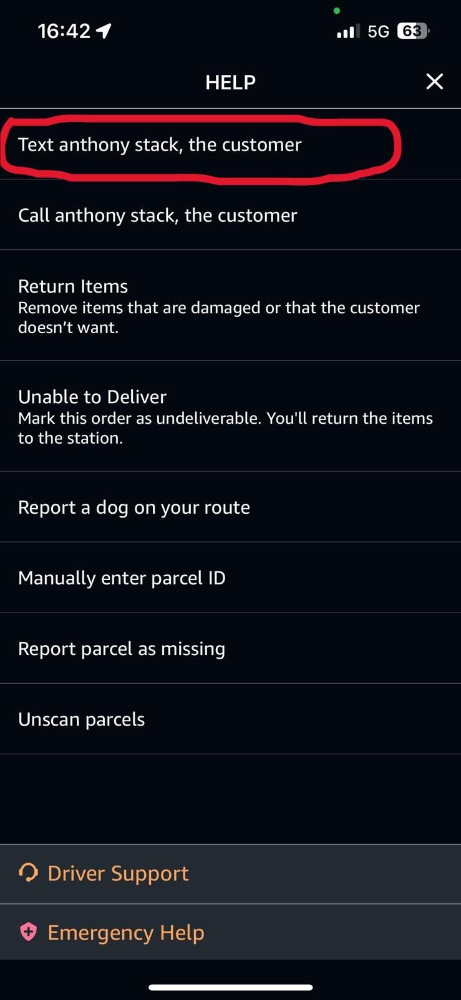
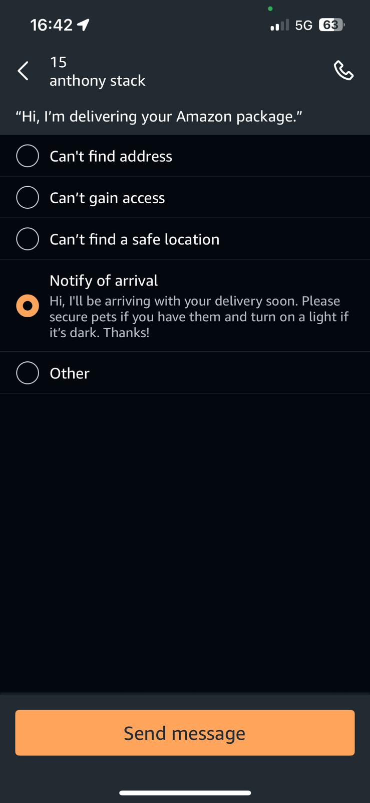

Notify of Arrival is the best all round process that can improve you scorecard by sending a simple text message before each delivery.
Please see the images below showing the process to sending an NOA text
Press the '?' Icon in the top right corner of your device
Press 'Text Customer'
Press Notify of Arrival